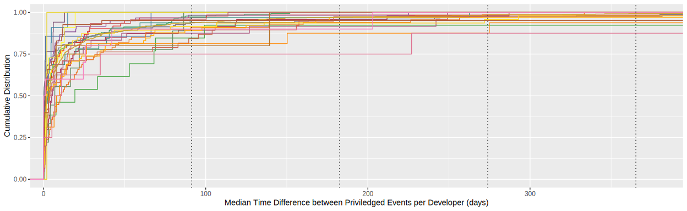
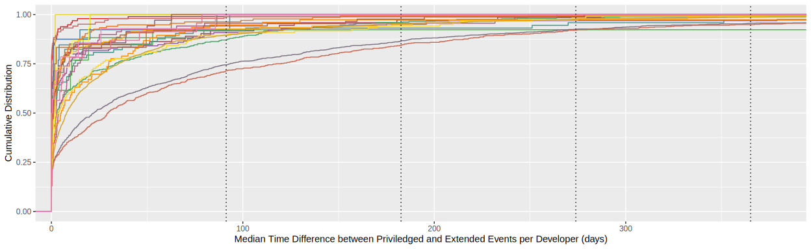

Automatic Core-Developer Identification on GitHub:
A Validation Study
—
Back to main page
RQ
1
: How long is the typical time difference between a developer's events that require, at least, write permission?
Time Differences between Privileged Events

Time Differences between Privileged+Extended Events

Jump to
top of page
|
results